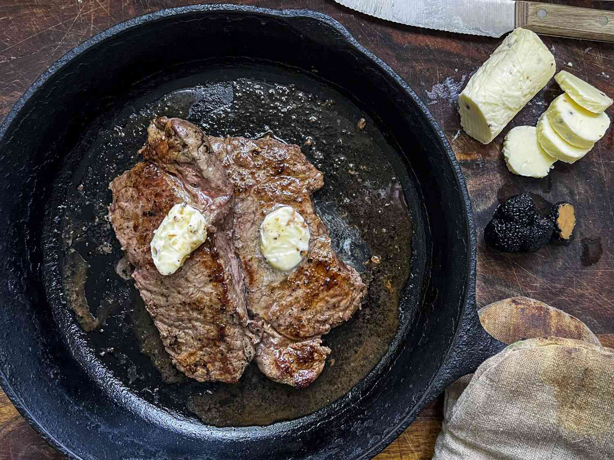
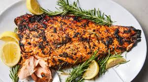
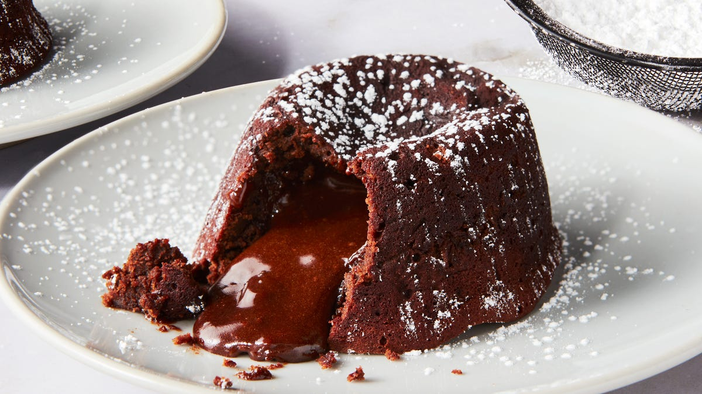
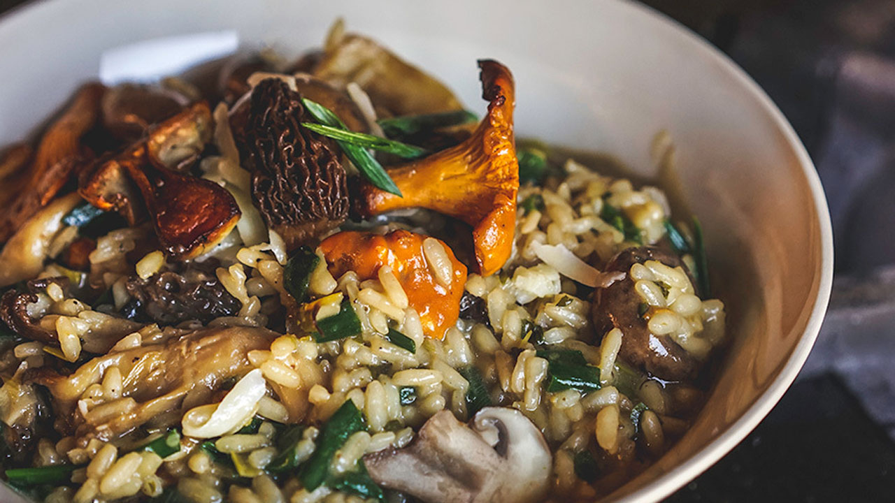

Locally sourced. Elegantly crafted. Unforgettable dining.
Today's Special: Loading...

Premium cut steak finished with rich truffle butter and roasted vegetables.

Fresh Atlantic salmon glazed with citrus and herbs.

Warm chocolate cake with a rich molten center.

Creamy risotto with seasonal wild mushrooms and parmesan.